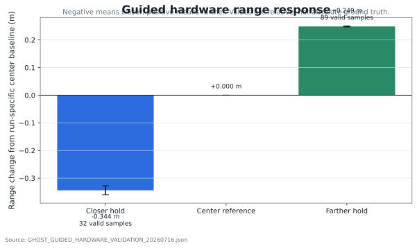
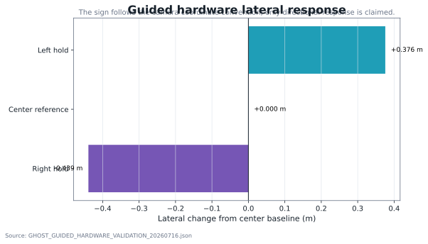
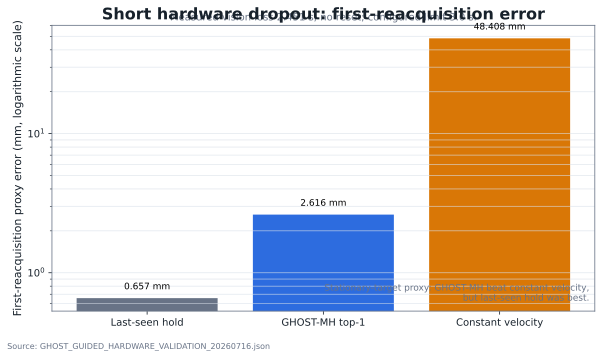
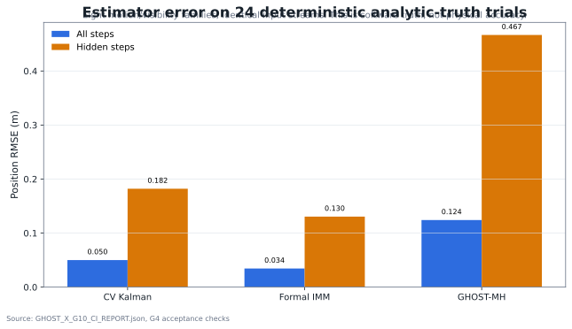
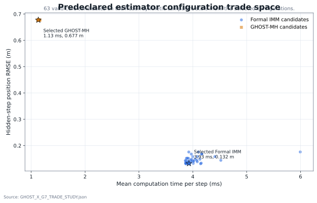
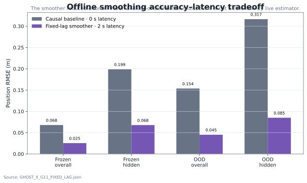
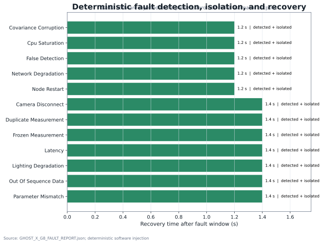
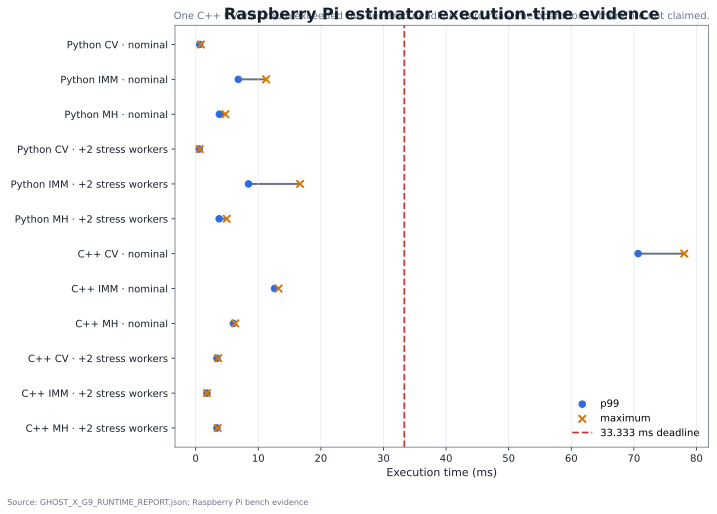
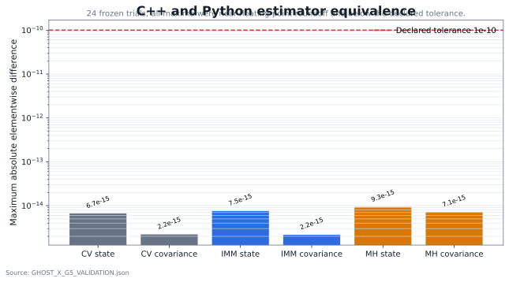

USB UVC camera
Calibrated eMeet C960 observes a 100 mm tag36h11 AprilTag through Linux V4L2.
A Raspberry Pi tracking and estimation project that compares a constant-velocity Kalman filter, a formal interacting multiple-model estimator, and a persistent multi-hypothesis tracker. The work includes guided hardware trials, deterministic analytic-truth campaigns, fault injection, runtime measurements, numerical equivalence, and release-level traceability.
The numbers below are generated from version-controlled JSON evidence. Hardware results and synthetic analytic-truth results are deliberately kept separate.
The hardware and software path is explicit. Each stage exposes timestamps, validity, covariance, status, and output artifacts rather than hiding the estimator behind a demonstration-only interface.
Calibrated eMeet C960 observes a 100 mm tag36h11 AprilTag through Linux V4L2.
OpenCV solvePnP produces camera-frame pose, covariance metadata, preview, and ROS 2 measurements.
CV Kalman, formal IMM, and GHOST-MH consume the same time-aligned input contracts.
Measurement age, tracking, prediction-only, degraded dropout, reset, and reacquisition remain visible.
JSONL logs, plots, reports, hashes, test gates, and a reproducible release preserve both passes and failures.
The camera/tag motions were operator-guided, so the valid claim is directional relative response. The dropout result uses measured recorder timestamps rather than the browser cue duration alone.



The calibrated Raspberry Pi pipeline demonstrated directional left/right/closer/farther response, return-to-center behavior, and reacquisition after a measured short tag occlusion without crossing the configured reset limit.
The controlled-truth campaign used 24 frozen analytic-truth trials across eight motion and visibility families. All three estimators received identical input streams.


A fixed-lag Rauch–Tung–Striebel smoother was tested as an offline extension. The causal baseline remained the live estimator.

The smoother is useful for post-processing, replay, and retrospective state reconstruction. It is not presented as a causal zero-latency replacement for the live tracker. The release retains both the causal baseline and the higher-accuracy delayed result.
The project records both outcomes. All twelve deterministic software-injected faults passed detection/isolation/recovery checks, while one maximum execution-time row exceeded the declared 33.333 ms deadline.


The C++ estimator library was checked against the Python reference on frozen streams, then incorporated into deterministic replay and release-level traceability.

These are part of the project evidence. They are not removed from the public story.
The camera/tag geometry was not moved between nominal grid positions. The calculated grid RMSE was rejected and is not used as physical accuracy evidence.
The closer hold had only two stable samples and one reset. The farther result was retained; a smaller closer-only retest later passed with 32 valid samples and no reset.
During the stationary short-dropout case, GHOST-MH beat constant velocity but did not beat the last-seen stationary hold. Universal superiority is therefore unsupported.
A C++ CV maximum execution-time result exceeded 33.333 ms, and the broader latency/publication requirements also missed their predeclared bounds. Hard-real-time certification is not claimed.
The page is a summary. The underlying reports remain available in machine-readable and human-readable forms.
| Result area | Primary evidence | What it supports | Boundary |
|---|---|---|---|
| Guided hardware response | Report · JSON | Directional motion response and bounded short-dropout reacquisition | No absolute ground-truth accuracy |
| Controlled software truth | G4 validation · G10 report | 24 accepted trials, identical streams, estimator RMSE | Synthetic analytic truth |
| Estimator trade study | Report · JSON | Predeclared ranking across 63 core candidates | Physical confirmation not implied |
| Fault injection | Report · JSON | Detection, isolation, recovery, status, and raw retained evidence | Software injection, not every direct hardware fault |
| Pi runtime | Report · JSON | Execution time, QoS, CPU, memory, temperature, throttling | Bench evidence; hard real time not claimed |
| C++ equivalence | Library report · Equivalence JSON | Implementation agreement on frozen vectors and configuration | Agreement does not prove model truth |
| Release traceability | 34-row traceability CSV · Release manifest | Requirement/test/evidence mapping and release checksums | Scope-limited release claims |
| Public plot data | Summary JSON · Summary CSV | Exact values used by this page and generated graphics | Regenerated from repository evidence |
The release includes the source archive, evidence manifest, checksum receipt, and guided hardware validation JSON. The published archive SHA-256 is e919b04e1fb2b9f696b09a580a49171e71e7e3ac06006af09db08361f2eb63e6.